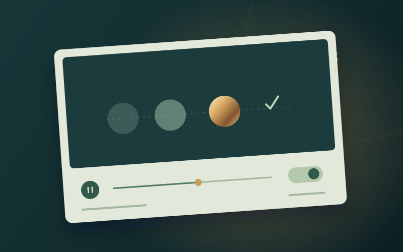

Practical guides
A clear path
to your next result.
Know what you need, follow a bounded setup, and check the result.

One paired task test
Make interface feedback feel clear
Build loading, success and retry states. Includes a practice pack and a tested comparison.
Follow the guide →
Source-led guide
Get your agent ready for website design
One folder. One useful page. A brief you can copy.
Follow the guide →Source-led guide
Turn scattered sources into a marketing brief
Three sources in. One campaign brief out. Every claim checked.
Follow the guide →Source-led guide
Install Motion Design in your project
Copy the pinned skill into your project, check discovery and try a small task.
Follow the guide →Source-led guide
Check a small finance report with Claude
Find a duplicate, explain a variance and reconcile two tiny files.
Follow the guide →Source-led guide
Start small with DeepSeek Harness
Choose a workspace and understand plugins before adding more tools.
Follow the guide →New source-led guides are not installation tests. Each guide explains what was reviewed and what you still need to verify.
Help me choose a setup →